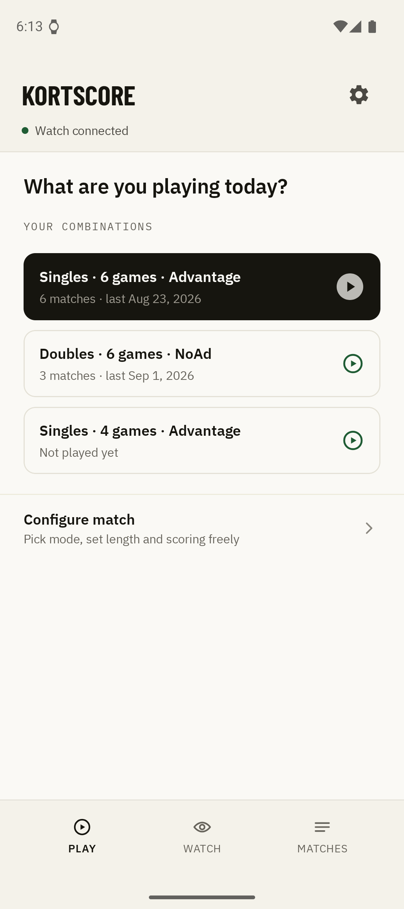
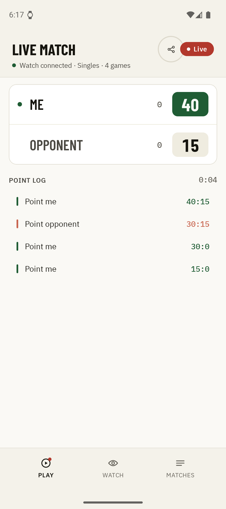
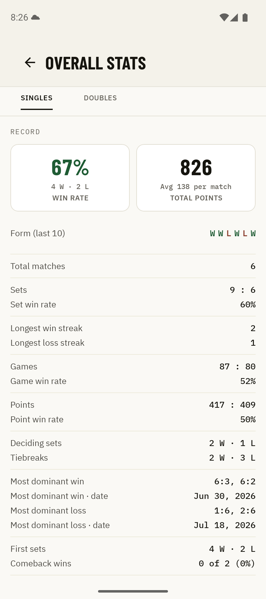

1×
The simplest controls
One tap on the watch and the point is counted. Twice for your opponent, four times to undo. No need to look at the display, no interrupted play.
Tennis & padel · Phone & watch
Kortscore counts your tennis or padel match on your wrist, point by point, without interrupting play. And whoever is not on court watches live.




1×
One tap on the watch and the point is counted. Twice for your opponent, four times to undo. No need to look at the display, no interrupted play.
67%
Win rate, set record, the point history of every match: your whole match history, evaluated automatically.
Live
Family, friends and club mates follow your match in real time on their phone, point by point, from anywhere.
0 €
Scoring, history and the live ticker cost nothing. Anyone who wants to dig deeper picks up Kortscore Plus.
01
Pick a format, or just tap the last combination. Singles, doubles, NoAd, best of 3, a single set: it all works.
02
The watch counts points, games and sets by real tennis and padel rules, tiebreak and champions tiebreak included.
03
The match lands in your history on the phone automatically, with the score in broadcast notation, duration and point history.
Also for padel
Padel scores like tennis: 15, 30, 40, game, set. So Kortscore needs no special treatment for it, the watch simply counts along. One tap per point, on court, without interrupting play.
For clubs & league play
On a league day several matches run at once, and nobody can be everywhere. With the live ticker the team, the captain and the fans follow every match in real time: from the next court, from the clubhouse or from home.
iPhone & Apple Watch
Kortscore runs on Android and Wear OS today. A version for iPhone and Apple Watch is very much possible, and how many people ask for it decides whether it gets built. Leave your address and you will hear from us once there is something to try.
No newsletter · no forwarding · Privacy
Free for Wear OS and Android. Ready in two minutes.

Wear OS 3+ · Android 8.0+ · no ads, no account